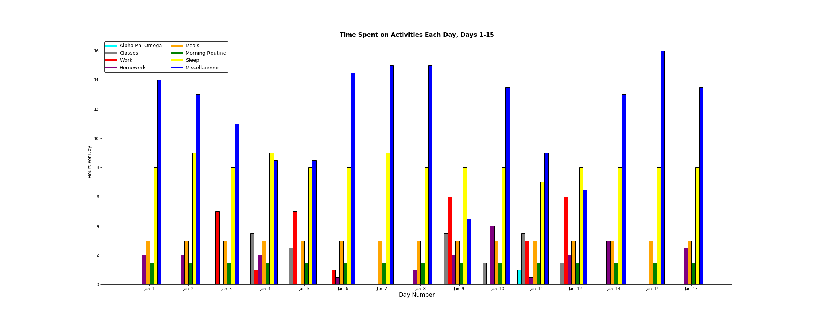

Many of us lead busy lives filled with busy days, feeling constantly overworked, exhausted and stressed. But have you ever considered where exactly your hours go each day and what they’re accomplishing? I delved into my schedule to find out.
As a full-time student with an array of responsibilities, including a part-time job, it’s easy to feel like I’m in a never-ending race to catch up on my work before a new, looming batch of duties inevitably piles itself onto my plate. Even though I decreased my workload significantly this semester to combat exactly this, I every day I still feel the hours rushing by and the daylight slipping away. I want to be more productive, so I decided a good place to start would be tracking where exactly my efforts are going each day.
I use Google Calendar and Wunderlist (a to-do list program) religiously to keep myself focused and organized — and as an added benefit, this means I have a fairly thorough time log. My Fitbit data helped me measure my sleep each night, but it has been unreliable as a fitness tracker, so I did not include transportation times in my research. Also, I don’t always have exact, timestamped ranges for each activity, so I measured my activities in the comparative number of hours they take up each day. I compiled this information into the two bar chart below, which measures my time in January 2017:
Most of these categories are self-explanatory, like sleep, classes, homework, and meals (which includes cooking time as well as actual consumption). “Morning routine” includes getting ready for the day as well as non-school-related reading and journaling. Alpha Phi Omega is the name of my service fraternity, and the chart measures my volunteer hours as part of the organization. “Work” specifically measures my time at The Pitt News, where I work as an editor. However, though I spend much of my time there working on homework, it takes me much longer to finish assignments in such a distracting environment, so I do not include this time under the “homework” label. Finally, “miscellaneous” encompasses activities I don’t have an accurate day-to-day measure for, like walking to class, socializing, or spending (too much) time on the internet.
I was surprised by what I found. Though I can discount some of my “miscellaneous” time as necessary (for transportation, socialization, household chores, and the like), most days have a large chunk of unaccounted time where I’m likely not doing anything productive. Downtime is an important component of productivity, as it’s difficult to be efficient when you feel burned out, but I doubt I need this much of it. Before this project, I felt like my days were fairly occupied with activities, but sometimes, almost half my day is unaccounted for. Keeping a more detailed time log of your days could be eye-opening, and now that the data gave me these insights, it would be interesting to compare my results a few months from now with the one I’ve created here.
Data is a powerful tool, and it can fuel self-examination projects like this one to change how you act and spend your time. We often complain about how busy we are, but how much of your day do you spend actually doing work or necessary tasks? It might be less than you think.